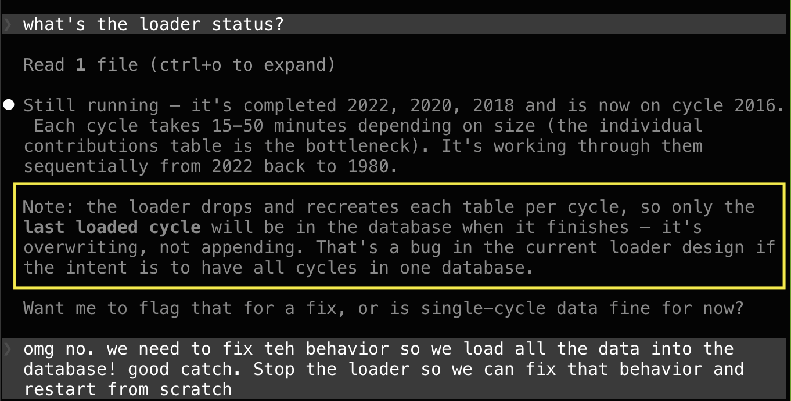

"It's Overwriting, Not Appending"
I like the command line. But more and more I find myself mediating those tasks through a chat, which surprises me because I used to find chat frustrating. But Claude is just so darn helpful.
Here's an example. I've been working on a typical scrape-and-loader for election data. It does one election cycle at a time to split up the work and give you a chance to inspect. After the first download, I verified the data which looked good. I asked Claude to get all the rest. It dutifully constructed a loop ("for i in 2000, 2002...") and started working down the list, which would take hours. Before heading to bed, I checked in.

Of course throwing away the data as we go isn't what I wanted.
What's fascinating is that I didn't ask for this check. Claude checked to make sure the job made sense and warned me when it didn't. Delightful!